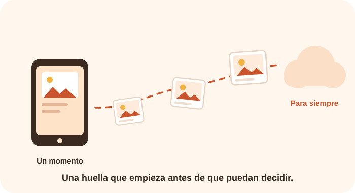

La mayoría de los niños tiene presencia en internet mucho antes de pronunciar su primera palabra. La ecografía en un grupo familiar, la foto del primer día de clases, el video del cumpleaños compartido con cariño. Nada de eso nace de una mala intención, y precisamente por eso casi nunca se piensa dos veces. Pero el resultado es el mismo: una biografía pública construida por otros sobre alguien que todavía no puede opinar.
Qué es exactamente la huella digital
La huella digital es el rastro de información que queda sobre una persona en internet: imágenes, nombres, fechas, ubicaciones, intereses y relaciones. En los adultos, esa huella es en gran parte una decisión propia. En la primera infancia no lo es nunca, porque quien publica es siempre un tercero.
Lo particular de este rastro es su duración. Una publicación se borra, pero una copia descargada, una captura o un archivo guardado por una plataforma pueden sobrevivir a la cuenta que los originó. Conviene partir de un supuesto incómodo pero realista: lo que se publica, se publica para siempre.

Compartir desde el cariño también comparte datos
Existe un nombre para la práctica de publicar contenidos sobre los propios hijos: sharenting, formado a partir de las palabras inglesas share (compartir) y parenting (crianza). No describe un comportamiento negligente, sino uno afectuoso y muy extendido. El problema no es el afecto, sino lo que la publicación revela sin que nadie lo note.
Una sola fotografía escolar puede contener bastante más información de la que parece:
- El nombre completo, visible en una mochila, un cuaderno o la etiqueta del uniforme.
- La institución educativa, identificable por el logo o el color del uniforme.
- La rutina, deducible de la hora y la frecuencia de las publicaciones.
- La ubicación, incorporada en los datos del archivo o en la etiqueta del lugar.
- La edad exacta, reconstruible a partir de las publicaciones de cumpleaños.
Ninguno de esos datos es grave por separado. Reunidos, componen un perfil razonablemente completo de un niño identificable, ubicable y predecible.
Cuatro decisiones antes de publicar
Revisar quién puede verlo
Diferenciar entre un grupo cerrado de familiares y una cuenta abierta cambia por completo el alcance de la publicación.
Quitar lo identificable
Nombres, uniformes, fachadas de la escuela, matrículas y etiquetas de ubicación pueden recortarse antes de compartir.
Evitar los momentos vulnerables
El baño, la enfermedad, el llanto o el castigo son situaciones que el niño probablemente no elegiría mostrar más adelante.
Preguntar cuando ya pueden responder
Desde los tres o cuatro años se puede pedir permiso de forma sencilla. Aunque la decisión final siga siendo del adulto, el gesto enseña que su imagen les pertenece.
Un derecho que estamos administrando
La Convención sobre los Derechos del Niño, adoptada por Naciones Unidas en 1989, reconoce la privacidad como un derecho de la infancia y no como una concesión de los adultos. En la práctica cotidiana eso significa que el adulto no es dueño de la imagen del niño: la administra temporalmente, hasta que él pueda decidir por sí mismo.
La pregunta no es si tenemos derecho a publicar, sino si estamos protegiendo algo que todavía no nos pertenece del todo.
Y cuando la publicación no es nuestra
Buena parte de la huella digital de un niño la generan otras personas: familiares, amistades y, con frecuencia, instituciones educativas. Conviene expresar las preferencias con claridad y por anticipado, tanto en el entorno familiar como en la escuela. Pedir que no se publique una fotografía no es un gesto desconfiado: es ejercer, en nombre del niño, un derecho que él todavía no puede reclamar.
Lo que deberíamos preguntarnos antes de compartir
💭 ¿Esta publicación beneficia al niño o solo a mi deseo de compartirla?
💭 ¿Le gustaría que esta imagen existiera cuando tenga quince años?
💭 ¿Qué información identificable aparece sin que yo la haya notado?
💭 ¿Quiénes pueden ver esto realmente, más allá de quienes imagino?
💭 ¿He dicho en la escuela y en la familia qué prefiero que no se publique?
Para profundizar
Las fuentes de esta entrada, incluidas las orientaciones de UNICEF sobre crianza digital, están citadas en la página de recursos.
Ver recursos y bibliografía →